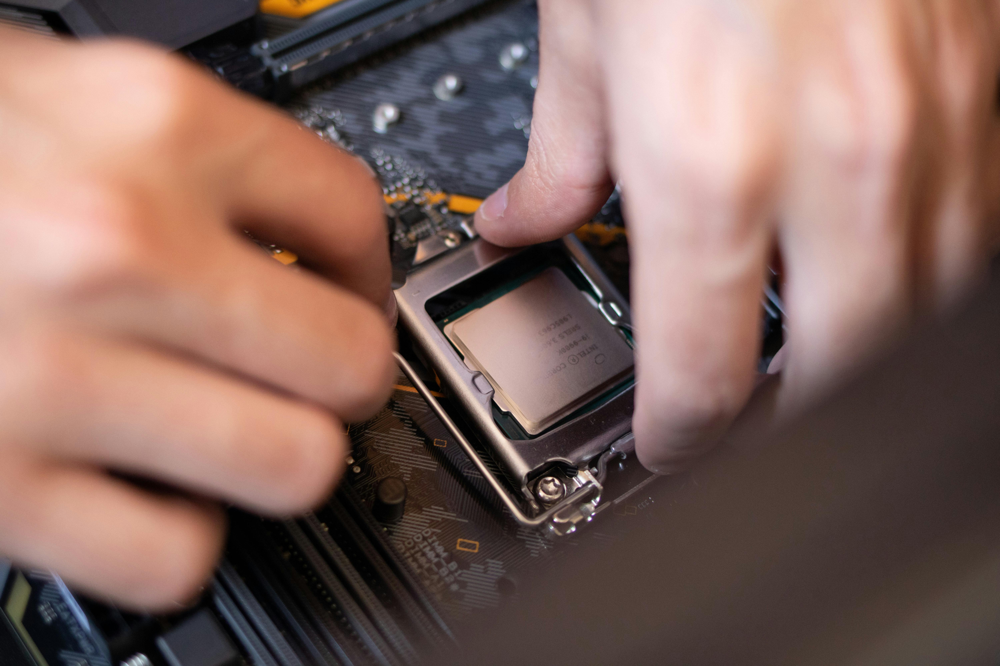

Components Needed
- PC case (w/ pre-intalled fans)
- CPU
- CPU Cooler
- RAM (at least 16gbs)
- Power Supply (PSU)
- Storage Device(s)
- Graphics Card (GPU)
- USB for operating system install
- Screwdrivers (Phillips #2 and Phillips #0)
- Thermal Paste (if necessary)
Instructions
Step 1

Prepare Your Workspace
You will need a large surface to work on, such as a table. To prevent an accidental electrostatic discharge (which can damage sensitive components), make sure you stand on an uncarpeted surface.
Make sure your PC case is appropriate for the size of your motherboard before you begin.
Step 2
Install CPU
Take the motherboard out of its antistatic packaging and put it on your work surface. Find the CPU socket, which will be covered with a protective plastic cap. In one corner of the plastic cap, or more commonly, on the socket itself, you'll see a small arrow—take note of where this arrow is.
Next to the CPU socket, you'll see a small metal lever. Press down on the lever and pull it gently to the side (away from the socket) to open the socket tray.
Be very careful when handling the CPU as both the CPU and the CPU socket are extremely susceptible to physical damage. Hold the CPU on the edges—never touch the pins on the bottom of the chip since your fingers can imprint them with dust or oil, and try not to touch the top of the chip either.
In one corner of the CPU, you'll see an arrow. Line this arrow up with the arrow on the socket and gently place the CPU onto the socket. Once the CPU has been gently seated, you can lower the retention lever down and push it back into place. Lowering the lever may require some force, but seating the CPU will not!
Step 3
Install M.2 SSD
Find the M.2 slot on your motherboard. It's a small, horizontal slot with a tiny screw across from it. Remove the tiny screw with a Phillips #0 screwdriver. Slide the M.2 SSD gently into the slot. When it's fully seated, it will stand off the motherboard about a 35-degree angle. Push the SSD down and replace the tiny screw to lock it in place.
Step 4

Install your CPU cooler
Some coolers come with thermal paste pre-applied to the conductive material (which sits on the CPU) and some coolers do not. If your cooler does not have pre-applied thermal paste, you will need to manually apply thermal paste before you seat the cooler. To apply thermal paste, squeeze a small dot (no larger than a grain of rice) onto the middle of the CPU. Then, place the cooler on the CPU—the pressure will spread the thermal paste adequately.
If you are using the stock box-style cooler that came with your CPU, start by aligning the clips with the 4 holes on the motherboard. Apply even pressure on each pin until it clicks into places.
All-In-One (AIO) liquid coolers will come with a mounting bracket. This will be screwed to the back of your motherboard, and the cooler will be attached using the provided screws. It is best to follow the manual that comes with your cooler to ensure it is installed succesfully.
Step 5


Install the Memory (RAM)
Determine how many RAM slots your motherboard has (most have either two or four). If you're going to fill all available RAM slots, simply snap the RAM into place. If you're not going to fill all of the RAM slots, consult the user manual to find the correct configuration and populate the RAM slots accordingly. Align the notch on the Ram slot with the notch in the RAM stick (or DIMM), and evenly press the DIM into the slot until it clicks.
Step 6
Mount the Power Supply
Attach the PSU to the case using the four screws that came with the PSU. Refer to the manual for cable connections to the motherboard and PC case.
Step 7
Install the motherboard into the case.
If your motherboard came with an unattached I/O shield—a rectangular sheet of metal with cutouts for the motherboard's ports—you should first snap it into place in the back of your case (make sure it's oriented correctly). I/O shields usually have sharp edges, so watch your fingers.
Once the I/O shield is in place, you can install the motherboard. Double-check to make sure your cables are all threaded through to the correct place, and then place the motherboard (align it with the I/O shield, first). Using a Phillips #2 screwdriver, mount the first screw—the center screw—to hold the motherboard in place. Make sure you do not drag your motherboard across the standoffs attached to the chassis.
Begin connecting the PSU cables to the motherboard.
Step 8

Install GPU
Find the PCIe x16 slot on your motherboard. It will be the longest PCIe slot and may be a different color than the others. If your motherboard has more than one PCIe x16 slot, check the user manual to see if one slot needs to be prioritized.
Remove the GPU from its antistatic packaging and carefully align it with both the rear retention bracket and the slot itself, and then gently push it into the PCIe x16 slot (you may hear a click). The PCIe tab on the motherboard may move into a locked position should you need to reseat the GPU.
Once the GPU is fully seated, secure it to the back of the case using one or two screws. If your GPU requires auxiliary power connectors, connect it to the power supply.
Step 9
Install Operating System
Plug in the USB flash drive that contains your OS, as well as a monitor, mouse, and keyboard, and turn on your PC.
The first screen you see will tell you to press a key to enter the system setup or BIOS. Press the key to open BIOS. (If the screen flashes off too quickly for you to see the key, consult your motherboard's user manual.)
First, you'll want to check to make sure your components are all installed and being recognized. Find the page in BIOS that shows your PC's system info (different motherboards have different BIOS setups, but you should be able to find a screen that gives you this information) and check to make sure the system is recognizing everything you've installed so far.
Next, poke around BIOS until you find the Boot page (may be called "Boot Order" or "Boot Priority"). Change the boot order so that your USB flash drive is first and the drive you want to install your OS on (if you're using an SSD as a boot drive, you will want to install the OS here) is second.
Restart your computer. Your computer will boot from the USB and the OS installer will pop up. Follow the instructions to finish the installation.
Check out this video tutorial!
In this PC building guide video, you can skip to certain sections that you nee additonal help with!